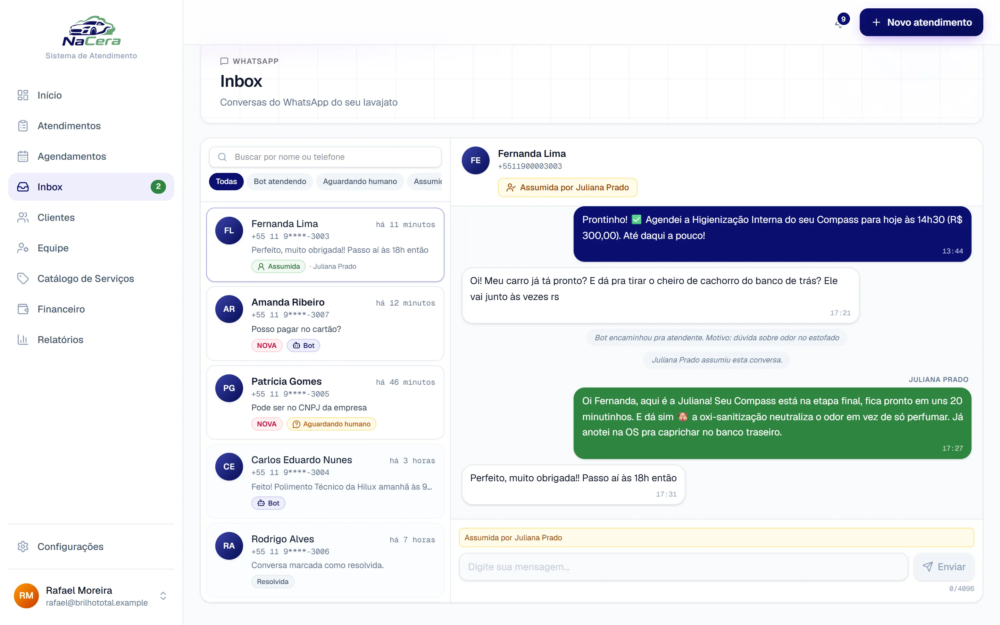
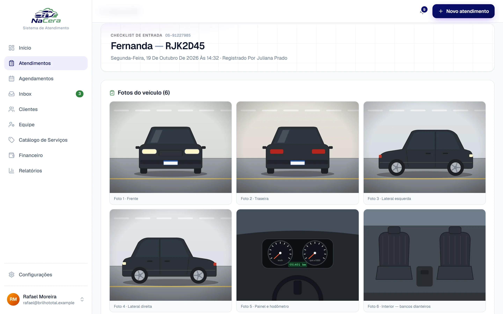
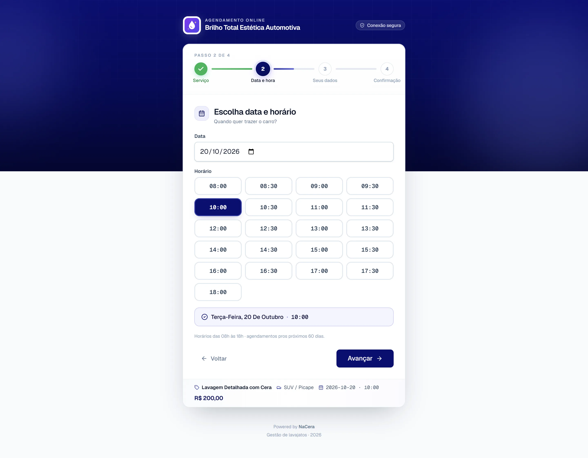
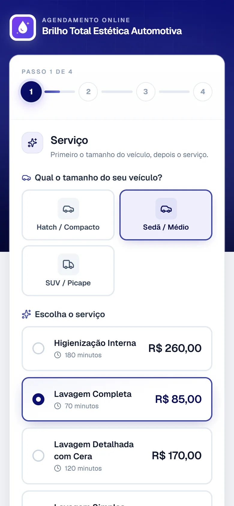
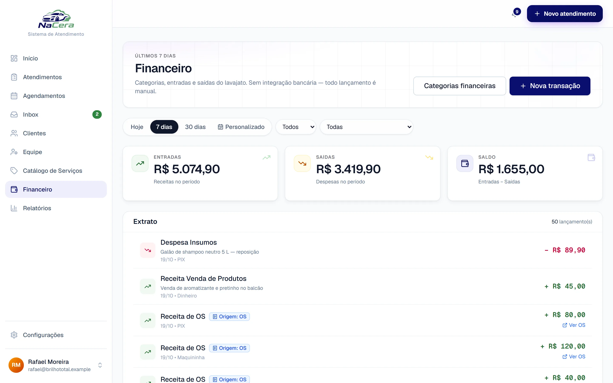
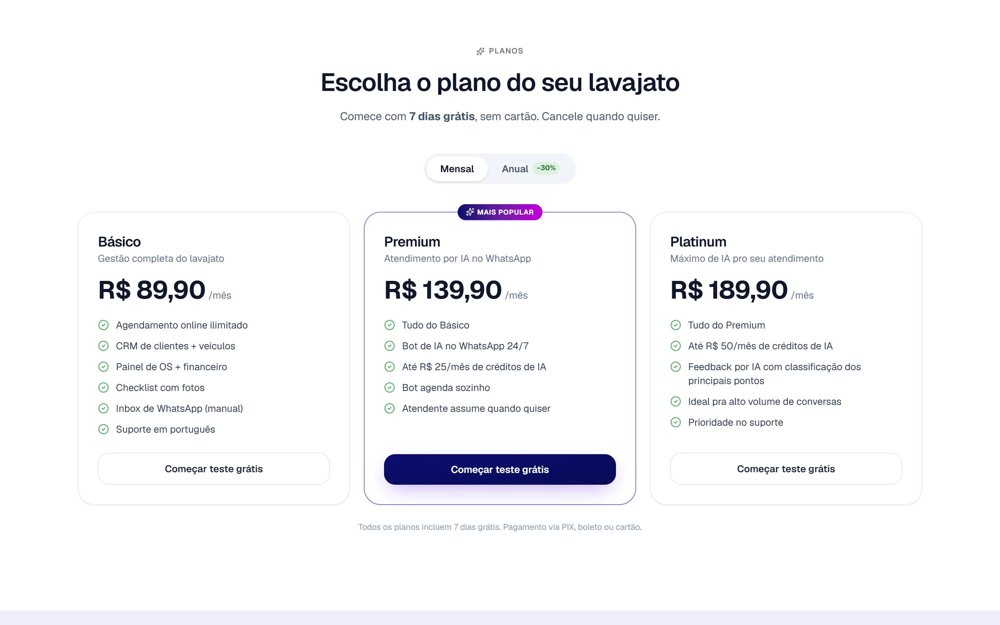

Estudo de caso 04 · SaaS próprio
NaCera
SaaS para lava-jatos com agenda pública, ordens de serviço, checklist com fotos, financeiro, assinatura recorrente e um bot de WhatsApp que marca horário sozinho.







O problema
Lava-jatos controlam agenda, serviços e caixa no papel ou no WhatsApp pessoal do dono. Perdem horários, discutem avarias sem prova e não sabem quanto faturaram no mês.
O NaCera digitaliza o fluxo do agendamento ao pagamento, registra o estado do carro com fotos na entrada e deixa um bot atender no WhatsApp a qualquer hora.
O que construí
- Cadastro self-service do lava-jato com catálogo de serviços e preço por porte do veículo.
- Link público de agendamento com a marca do lava-jato, serviços adicionais e só os horários livres.
- Ordens de serviço com equipe, clientes, veículos e pagamentos, com alerta quando o valor pago diverge do cobrado.
- Checklist de entrada com fotos obrigatórias e assinatura do cliente, guardado em storage com URL pré-assinada.
- Bot de WhatsApp com 4 ferramentas (listar serviços, ver disponibilidade, criar agendamento e chamar um humano) e uma caixa de entrada para o atendente assumir.
- Assinatura pelo Asaas com 3 planos, desconto no anual e teste grátis de 7 dias, mais um painel da plataforma com autenticação em dois fatores.
Decisões técnicas
Isolamento no próprio banco
Row-Level Security no PostgreSQL com três papéis de acesso. Cada transação define a empresa com SET LOCAL, e há testes que tentam ler dados de outra empresa para garantir que a leitura falha.
Spec antes do código
Cada funcionalidade nasceu de uma spec com plano, modelo de dados e contratos. Uma "constituição" do projeto define princípios inegociáveis de isolamento, LGPD, dinheiro e segurança.
IA com orçamento por empresa
O provedor de WhatsApp é plugável (UazAPI ou Meta Cloud API), as credenciais ficam criptografadas com AES-256-GCM e cada empresa tem um limite de gasto com o modelo de linguagem. Tudo com testes.
Dinheiro e LGPD testados
Biblioteca própria para valores monetários, registro de consentimento, trilha de auditoria e testes que verificam a remoção de dados pessoais.
Segunda vertical em 5 dias
O AgendBeauty reaproveitou a base para salões e barbearias. A mudança principal foi trocar "veículo" por um "recurso" genérico com capacidade própria, como uma cadeira ou um profissional.
Em números
Stack
- Next.js 15
- React 19
- TypeScript
- Prisma
- PostgreSQL 17
- Better Auth
- Tailwind 4
- Zod
- Vitest
- OpenAI
- S3 / R2
- Resend
- Upstash Redis
- PWA
- Docker Swarm
- Traefik